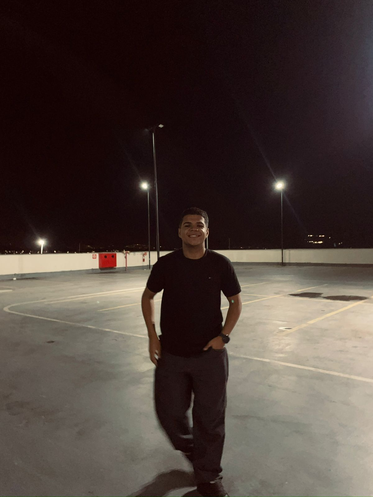

Olá, sou o
Pedro Ramos!
Estou cursando Análise e Desenvolvimento de Sistemas na PUC Minas, com expectativa de conclusão em dezembro de 2027, e possuo formação técnica em Recursos Humanos pela Cruzeiro do Sul Virtual. Tenho competências em pensamento crítico e ético aplicado à tecnologia, além de habilidades em desenvolvimento web e programação orientada a objetos. Meu objetivo é unir a bagagem de RH com o aprendizado em tecnologia para trazer soluções inovadoras às organizações.
